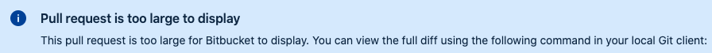

I was working on a white-label mobile application in active development. (If you plan to develop a white-label mobile app, JUST DON'T!!! 😅 But this is a story for another post.) I implemented a BIG FEATURE that was very tightly coupled with back-end implementation.
The PRs were created, reviewed, and approved by front-end and back-end teams.
Everything was tested, some small bugs were found, I fixed them and was ready for merging to master branch.
But some severe bugs and priority features had to be done,
so the back-end developer had to switch working on them and the back-end implementation was not shipped in production.
I didn't want to merge my commits in master branch,
as the implementation in back-end may be changed after addition of other requirements
and decided to wait until the back-end developer will be free and ready to merge his implementations.
I thought that the feature will be shipped the week after.
Meanwhile, I started working on the next feature that was based on the BIG FEATURE.
When I finished I didn't create a new PR in master branch as the feature2 branch included changes from feature1.
After a week I asked the back-end developer about the status with BIG FEATURE shipment to production,
but he was busy with other tasks and as the app was in active development I continued developing on top of big-feature branch.
I was working alone in that repo and the front-end devs were helping me only with pair programming or opinions on feature implementations. No one needed my changes and I took the easy path of just working on features/bugs and creating builds directly for testers and onboarding clients.
Time has passed, the back-end developer forgot about the BIG FEATURE.
I was working on features and bug fixes.
feature5, feature10, feature13, bugfix12, refactor2 branches were all created on top of big-feature branch.
One day I understood that the PR in master branch will be an ENORMOUS lesson for me and the team.
Another developer joined the project so I created a new dev branch from feature16 and for the last 2 weeks, we created and reviewed PRs in dev branch.
Finally after 140 days from the beginning of BIG FEATURE the back-end implementation was merged and shipped to prod.
And I was ready for my biggest Pull Request (so far).

It was so big that BitBucket couldn't display it. The only way to review it was by checking each commit separately or maybe using a desktop git client. Additional complexity added mobile-specific files that were generated by XCode and Android Studio.
420 files changed, 25739 insertions(+), 19429 deletions(-) In the end, I received 3 approves and only one comment.
"Omg" - Tech Lead (implemented the back-end for BIG FEATURE)
temporary-master branches master.
Or you are working on a BIG FEATURE, divide BIG FEATURE in big-feature-phase-1, big-feature-phase-2.
Create temporary branches like dev and make PRs in dev."Fix PR comments" commits and then squash them. "Fix PR comments" commit in previous feature commit.